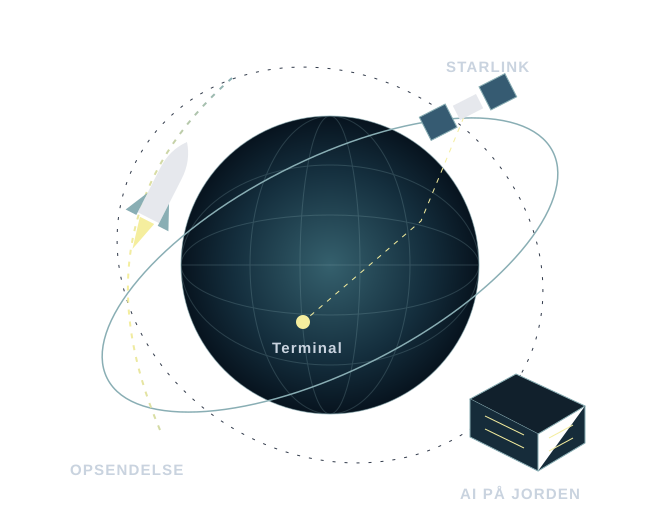
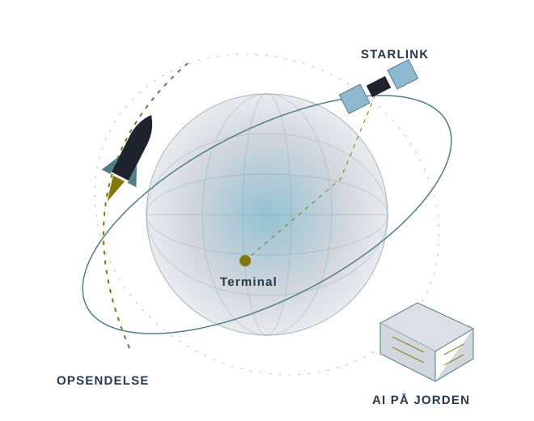

… selskaber fordelt på … temaer. Tallene er fondens egne pr. … .
Fonden fordelt på temaer
Peg på et tema for at se, hvor meget det fylder.Tryk på et tema for at se, hvor meget det fylder.
… temaer
Temaerne er vores egen opdeling. Andele i PMINDI pr. … (fondens data).
Sådan hænger selskaberne sammen
Jo større prik, jo mere fylder selskabet i fonden. Stregerne viser, hvor mange selskaber i ét tema der også arbejder inden for et andet tema. Jo tykkere streg, jo flere selskaber.
Kortet viser de … selskaber, der hører til et tema. … beholdninger i fonden har intet tema og er ikke med: ….
Se stregerne som liste
Par af temaer og antal selskaber, der arbejder inden for begge
Temaer
Selskaber
og
Se prikkortets tal som liste
Temaer med antal selskaber og andel af fonden
Tema
Selskaber
Andel af fonden
Prikker: Andele i PMINDI pr. … (fondens data). Streger: NewDeal Invests klassifikation af selskabernes andre temaer pr. … .
Eksemplerne bygger på NewDeal Invests temasider og selskabsregister. Illustrationer: NewDeal Invest.
SpaceX
… selskab i PMINDI og … % af fonden.


SpaceX hører til temaet Rumfart. Selskabet sender raketter og satellitter op og leverer internet gennem Starlink. I februar 2026 overtog SpaceX AI-selskabet xAI.
Skematisk. Illustration: NewDeal Invest.
De … største selskaber
Tilsammen … % af fonden.
… %af fonden er de … største selskaber tilsammen
De største selskaber i PMINDI med tema og andel af fonden
Landet kommer fra aktiens ISIN-kode. Det er ikke nødvendigvis der, selskabet arbejder (eller har sine kunder).
Jo større prik, jo større del af fonden.
Fondens aktier har ISIN-kode fra … lande. Flest har ISIN-kode fra …: … selskaber, som fylder … % af fonden.
Udenlandske selskaber, som fonden ejer gennem depotbeviser (ADR eller GDR), har en ISIN-kode fra det land, hvor depotbeviset er registreret, og ikke fra selskabets eget land. Det gælder fx …. Kortet tæller dem derfor ikke med under USA. De står for sig selv som Depotbeviser med amerikansk ISIN-kode: … selskaber, som fylder … % af fonden.
… er der, hvor selskabet er juridisk registreret, ikke der, hvor det arbejder.
Se alle ISIN-lande
ISIN-lande med antal selskaber og andel af fonden
Land
Selskaber
Andel af fonden
Depotbeviser med amerikansk ISIN-kode
…
… %
Kilde: landekoden i ISIN, navnet (ADR, ADS, GDR) og handelsstedet for hver aktie i fondens beholdning pr. … . Landkort: Natural Earth (fri brug).
Det skal du vide
Risiko og de to udgaver af fonden
Risikoklasse 5 af 7
1
2
3
4
5
6
7
LavHøj
Risikoklassen er et tal fra 1 til 7 i fondens faktaark (KID). KID er et kort dokument med nøgleoplysninger, som alle fonde skal have. 1 er den laveste, og 7 er den højeste. Fonden kan falde i værdi, og du kan tabe hele det beløb, du investerer.
To udgaver af fonden
Fonden findes i to udgaver. Den store forskel er, hvad der sker med udbyttet. Udbytte er den del af overskuddet, som et selskab deler ud til sine ejere.
Se de to udgaver, ISIN og faktaark
De to udgaver ejer ikke de samme aktier i samme mængde. PMINDI ejer aktier i … selskaber, PMINDIAKK i … selskaber. Forsiden, temasiderne og selskabssiderne viser PMINDI. I PMINDIAKK kan et temas andel og plads være en anden, så hver temaside viser også temaets andel og plads i PMINDIAKK.
ISIN er udgavens id-nummer. Det bruger banken til at finde den rigtige udgave.
Markedsføringsmateriale fra NewDeal Invest. PMINDI og PMINDIAKK forvaltes af Fundmarket A/S. Siderne forklarer fondens temaer og selskaber. De siger ikke, om fonden passer til dig, og de er ikke personlig investerings- eller skatterådgivning.
Teknologiaktier kan svinge meget. Læs faktaarket (KID), prospektet og risikobeskrivelsen, før du investerer.